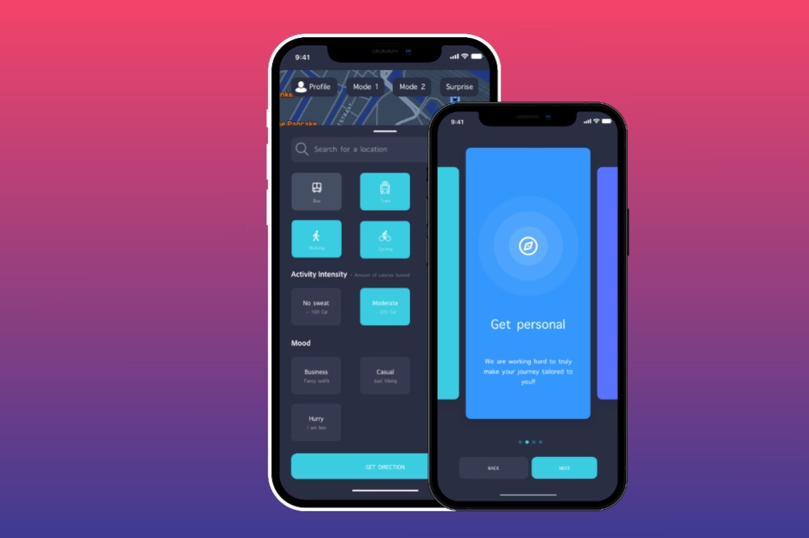

Almere → Amsterdam, NL
Hi, I'm Priyesh. I turn messy data into things people can actually use: reliable pipelines, clear dashboards and models that look ahead instead of back.
By day I work at the Dutch Authority for the Financial Markets (AFM), where I engineer scalable data solutions with Microsoft Fabric, Spark and Data Lakes, and automate regulatory and risk reporting in Power BI and SSRS for 25+ teams. Before that I spent three years at Yellowtail building GRC reporting workflows and data solutions for government clients.
I care about data ethics and privacy, predictive analytics, and explaining what the numbers actually mean — in plain language, to anyone who has to make a decision with them.
What I do
- Dashboards & KPI reporting — Power BI dashboards teams can steer on directly.
- Data pipelines & engineering — Fabric, Spark and Data Lakes; reliable and reusable data.
- Machine learning & forecasting — Python models that predict trends and peak load.
- Data storytelling — sessions and analyses in clear language for stakeholders.
Organisations I've worked with


- Engineering scalable data solutions with Microsoft Fabric, Spark and Data Lakes for AFM's supervisory processes and data-driven policymaking.
- Automated regulatory and risk reporting with Power BI and SSRS — faster turnaround, consistent reports across departments.
- Translating complex financial datasets into clear visual insights for 25+ teams.
- Turned complex datasets into actionable insights with SQL and Python, improving operational efficiency by 15%.
- Designed and automated GRC reporting workflows; built interactive Power BI / SSRS dashboards, cutting report prep time by 23%.
- Gathered requirements with government stakeholders and delivered tailored data solutions for 25+ departments.
- Analysed sales data for KPIs and business opportunities; built visualisations and dashboards for management.
- Statistics & probability, machine learning, data visualization.
- Predicted crowdedness in Amsterdam for the City of Amsterdam using GVB transit and concert data.
- Data structures & algorithms, information systems design.
- Built an interactive UI prototype for Marktplaats with iDIN identity verification.
Want the full story? Find me on LinkedIn or run SELECT * FROM experience; in sql_term.exe.

Career KPIs
Tool proficiency
⟳ Refreshed live from priyesh.dwh · semantic model v2.6 · no rows were harmed
Always happy to talk data, dashboards or a good idea.
💼 linkedin.com/in/priyesh-jagroep
📍 Almere / Amsterdam, the Netherlands
Personal experiments, built for fun with public data and on my own time — not client work. Where the day job meets the hobbies.
Gradient-boosted model trained on ranked match data from the Riot API. Set the state of your game at 15 minutes:
Personal experiment — demo runs a simplified version of the model with sample coefficients. Related: LeagueConfig on GitHub. Not affiliated with Riot Games.
Resale price index of archive designer pieces, built from public Grailed and Vestiaire listings. Indexed to 2019 = 100, dotted segment = forecast.
Top movers
| piece | trend |
|---|---|
| Yohji FW98 wool gabardine coat | +38% YoY ▲ |
| Issey Miyake Pleats Please column dress | +31% YoY ▲ |
| CDG lumps & bumps reissue | +19% YoY ▲ |
| hype-collab sneakers (category avg) | −12% YoY ▼ |
Personal experiment on public listing data — sample series shown, no affiliation with any brand or platform. Related: invoice tooling I built for Restocks resellers.
A small CNN trained on runway images, reduced to silhouettes. You guess first — then see what the model says.
Personal experiment — concept demo with stylised silhouettes and confidences from sample runs. No affiliation with any designer.
right-click (or flag mode) to flag